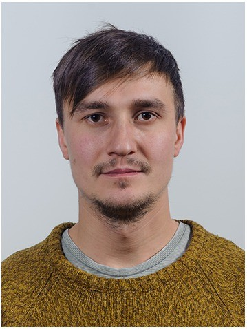

Geophysical Engineer – Topoexim SRL – Bucharest – 08.2018 – 08.2019
Dropshipping – amazon/ebay – 2016 – 2018
Internship – Weatherford – Ploiesti (Romania) – 2017 (3 months)
Internship – Prospectiuni S.A / GeoEcoMar – Bucharest(Romania) – 2016 (2 months)
Internship – Cabinetde Avocat Strimbeanu – Bucharest(Romania) – 2013 (3 months)
Driver’s License: B